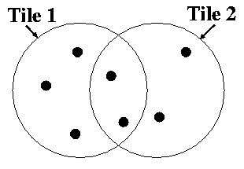
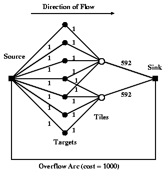
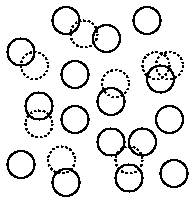

Algorithms: Tiling of spectroscopy plates
Tiling is the process by which the spectroscopic plates are designed
and placed relative to each other. This procedure involves optimizing
both the placement of fibers on individual
plates, as well as the placement of plates (or tiles) relative to each
other.
- Introduction
- Spectroscopy Survey Overview
- What is Tiling?
- Fiber Placement
- Dealing with Fiber Collisions
- Tile Placement
- Technical Details
Introduction
Because of large-scale structure in the galaxy distribution (which
form the bulk of the SDSS targets), a naive covering of the sky with
equally-spaced tiles does not yield uniform sampling. Thus, we present
a heuristic for perturbing the centers of the tiles from the
equally-spaced distribution to provide more uniform
completeness. For the SDSS sample, we can attain a sampling rate of
>92% for all targets, and >99% for the set of targets which do
not collide with each other, with an efficiency >90% (defined as
the fraction of available fibers assigned to targets).
Much of the content of this page can be found in the
SDSS
tiling paper Blanton et al. 2003, AJ 125, 2276.
The Spectroscopic Survey
The spectroscopic survey is performed using two multi-object fiber
spectrographs on the same telescope. Each spectroscopic
fiber plug plate, referred to as a ``tile,'' has a circular field-of-view
with a radius of 1.49 degrees, and can accommodate 640 fibers, 48 of
which are reserved for observations of blank sky and
spectrophotometric standards.Because of the finite size of the fiber
plugs, the minimum separation of fiber centers is 55''. If, for
example, two objects are within 55'' of each other, both of them can
be observed only if they lie in the overlap between two adjacent
tiles. The goal of the SDSS is to observe 99% of the maximal set of
targets which has no such collisions (about 90% of all targets).
What is Tiling?
Around 2,000 tiles will be necessary to provide fibers for all the
targets in the survey. Since each tile which must be observed
contributes to the cost of the survey (due both to the cost of
production of the plate and to the cost of observing time), we desire
to minimize the number of tiles necessary to observe all the desired
targets. In order to maximize efficiency (defined as the fraction of
available fibers assigned to tiled targets) when placing these tiles
and assigning targets to each tile, we need to address two
problems. First, we must be able to determine, given a set of tile
centers, how to optimally assign targets to each tile --- that is, how
to maximize the number of targets which have fibers assigned to them.
Second, we must determine the most efficient placement of the tile
centers, which is non-trivial because the distribution of targets on
the sky is non-uniform, due to the well-known clustering of galaxies
on the sky. We find the exact solution to the first problem and use a
heuristic method developed by Lupton et al. (1998) to find an
approximate solution to the second problem (which is NP-complete).
The code which implements this solution is designed to run on a patch of sky
consisting of a set of rectangles in a spherical coordinate system,
known in SDSS parlance as a tiling region.
NOTE: the term ``chunk'' or ``tiling chunk'' is sometimes
used to denote a tiling region. To avoid confusion with the
correct use of the term chunk, we use ``tiling region'' here.
Fiber Placement
First, we discuss the allocation of fibers given a set of tile
centers, ignoring fiber collisions for the moment.
Figure 1 shows at the left a very simple example of a
distribution of targets and the positions of two tiles we want to use
to observe these targets. Given that for each tile there is a finite
number of available fibers, how do we decide which targets get
allocated to which tile? This problem is equivalent to a network flow
problem, which computer scientists have been kind enough to solve for us
already.
|  |  |
Figure 1: Simplified Tiling and Network Flow View |
The basic idea is shown in the right half of Figure 1,
which shows the appropriate network for the situation in the left
half. Using this figure as reference, we here define some terms
which are standard in combinatorial literature and which will be
useful here:
- node: The nodes are the solid dots in the figure; they
provide either sources/sinks of objects for the flow or simply serve
as junctions for the flow. For example, in this context each target
and each tile corresponds to a node.
- arc: The arcs are the lines connecting the nodes. They
show the paths along which objects can flow from node to node. In
Figure 1, it is understood that the flow along the arc
proceeds to the right. For example, the arcs traveling from target
nodes to tile nodes express which tiles each target may be assigned
to.
- capacity: The minimum and maximum capacity of each arc is
the minimum and maximum number of objects that can flow along it. For
example, because each tile can accommodate only 592 target fibers, the
capacities of the arcs traveling from the tile nodes to the sink node
is 592.
- cost: The cost per object along each arc is exacted for
allowing objects to flow down a particular arc; the total cost is the
summed cost of all the arcs. In this paper, the network is designed
such that the minimum total cost solution is the desired solution.
Imagine a flow of 7 objects entering the network at
the source node at the left. We want the entire flow to leave
the network at the sink node at the right for the lowest possible
cost. The objects travel along the arcs, from node to node. Each
arc has a maximum capacity of objects which it can transport, as
labeled. (One can also specify a minimum number, which will be
useful later). Each arc also has an associated cost, which is exacted
per object which is allowed to flow across that arc. Arcs link the
source node to a set of nodes corresponding to the set of
targets. Each target node is linked by an arc to the node of each tile
it is covered by. Each tile node is linked to the sink node by an arc
whose capacity is equal to the number of fibers available on that
tile. None of these arcs has any associated cost. Finally, an
``overflow'' arc links the source node directly to the sink node, for
targets which cannot be assigned to tiles. The overflow arc has
effectively infinite capacity; however, a cost is assigned to objects
flowing on the overflow arc, guaranteeing that the algorithm fails to
assign targets to tiles only when it absolutely has to. This network
thus expresses all the possible fiber allocations as well as the
constraints on the numbers of fibers in each tile. Finding the
minimum cost solution then maximizes the number of targets
which are actually assigned to tiles.
Dealing with Fiber Collisions
As described above, there is a limit of 55'' to how close two fibers
can be on the same tile. If there were no overlaps between tiles,
these collisions would make it impossible to observe ~10% of
the SDSS targets. Because the tiles are circular, some fraction of
the sky will be covered with overlaps of tiles, allowing some of these
targets to be recovered. In the presence of these collisions, the
best assignment of targets to the tiles must account for the presence
of collisions, and strive to resolve as many as possible of these
collisions which are in overlaps of tiles. We approach this problem
in two steps, for reasons described below. First, we apply the network
flow algorithm of the above section to the
set of ``decollided''
targets --- the largest possible subset of the targets which do not
collide with each other. Second, we use the remaining fibers and a
second network flow solution to optimally resolve collisions in
overlap regions.
|  |
Figure 2: Fiber Collisions |
The "decollided" set of targets is the maximal subset of targets which
are all greater than 55'' from each other. To clarify what we mean by
this maximal set, consider Figure 2. Each circle represents a target;
the circle diameter is 55'', meaning that overlapping circles are
targets which collide. The set of solid circles is the ``decollided''
set. Thus, in the triple collision at the top, it is best to keep the
outside two rather than the middle one.
This determination is complicated slightly by the fact that some
targets are assigned higher priority than others. For example, as
explained in the Targetting pages, QSOs are
given higher priority than
galaxies by the SDSS target selection algorithms. What we mean here by
``priority'' is that a higher priority target is guaranteed never to
be eliminated from the sample due to a collision with a lower priority
object. Thus, our true criterion for determining whether one set of
assignments of fibers to targets in a group is more favorable than
another is that a greater number of the highest priority objects are
assigned fibers.
Once we have identified our set of decollided objects, we use the
network flow solution to find the best possible assignment of fibers
to that set of objects.
After allocating fibers to the set of decollided
targets, there will
usually be unallocated fibers, which we want to use to resolve
fiber collisions in the overlaps. We can again express the problem of
how best to perform the collision resolution as a network, although
the problem is a bit more complicated in this case. In the case of
binaries and triples, we design a network flow problem such that the
network flow solution chooses the tile assignments optimally. In the
case of higher multiplicity groups, our simple method for binaries and
triples does not work and we instead resolve the fiber collisions in a
random fashion; however, fewer than 1% of targets are in such groups,
and the difference between the optimal choice of assignments and the
random choices made for these groups is only a small fraction of that.
We refer the reader to the tiling
algorithm paper for more details, including how the fiber
collision network flow is designed and caveats about what
aspects of the method may need to be changed under different
circumstances.
Tile Placement
Once one understands how to assign fibers given a set of tile centers,
one can address the problem of how best to place those tile centers.
Our method first distributes tiles
uniformly across the sky and then uses a cost-minimization scheme to
perturb the tiles to a more efficient solution.
In most cases, we set initial conditions by simply laying down a
rectangle of tiles. To set the centers of the tiles along the long
direction of the rectangle, we count the number of targets along the
stripe covered by that tile. The first tile is put at the mean of the
positions of target 0 and target N_t, where N_t
is the number of fibers per tile (592 for the SDSS). The second tile
is put at the mean between target N_t and 2N_t, and so on.
The counting of targets along adjacent stripes is offset by about half a
tile diameter in order to provide more complete covering.
The method is of perturbing this uniform distribution is iterative.
First, one allocates targets to the tiles, but instead of limiting a
target to the tiles within a tile radius, one allows a target to be
assigned to further tiles, but with a certain cost which increases
with distance (remember that the network flow accommodates the
assignment of costs to arcs). One uses exactly the same fiber
allocation procedure as above.
What this does is to give each tile some information about the
distribution of targets outside of it. Then, once one has assigned a
set of targets to each tile, one changes each tile position to that
which minimizes the cost of its set of targets. Then, with the new
positions,
one reruns the fiber
allocation, perturbs the tiles again, and so on. This method is guaranteed
to converge to a minimum (though
not necessarily a global minimum), because the total cost must
decrease at each step.
In practice, we also need to determine the appropriate number of tiles
to use. Thus, using a standard binary search, we repeatedly run the
cost-minimization to find the minimum number of tiles necessary to
satisfy the SDSS requirements, namely that we assign fibers to 99%
of the decollided targets.
In order to test how well this algorithm works, we have applied it
both to simulated and real data. These results are discussed in the
Tiling
paper.
Technical Details
There are a few technical details which may be useful to mention in
the context of SDSS data. Most importantly, we will describe which
targets within the SDSS are ``tiled'' in the manner described here,
and how such targets are prioritized. Second, we will discuss the
method used by SDSS to deal with the fact that the imaging and
spectroscopy are performed within the same five-year time
period. Third, we will describe the tiling outputs which the SDSS
tracks as the survey progresses. Throughout, we refer to the code
which implements the algorithm described above as tiling.
Only some of the spectroscopic target types identified by the target
selection algorithms in the SDSS are ``tiled.'' These types (and their
designations in the primary and secondary target bitmasks) are
described in the Targetting pages). They consist
of most types of QSOs, main sample galaxies,
LRGs, hot standard stars, and brown dwarfs. These are the types of
targets for which tiling is run and for which we are attempting to
create a well-defined sample. Once the code has guaranteed fibers to
all possible ``tiled targets,'' remaining fibers are assigned to other
target types by a separate code.
All of these target types are treated equivalently, except that they
assigned different ``priorities,'' designated by an integer. As
described above, the tiling code uses them to help decide fiber
collisions. The sense is that a higher priority object will never lose
a fiber in favor of a lower priority object. The priorities are
assigned in a somewhat complicated way for reasons immaterial to
tiling, but the essence is the following: the highest priority objects
are brown dwarfs and hot standards, next come QSOs, and the lowest
priority objects are galaxies and LRGs. QSOs have higher priority than
galaxies because galaxies are higher density and have stronger angular
clustering. Thus, allowing galaxies to bump QSOs would allow
variations in galaxy density to imprint themselves into variations in
the density of QSOs assigned to fibers, which we would like to avoid.
For similar reasons, brown dwarfs and hot standard stars (which have
extremely low densities on the sky) are given highest priority.
Each tile, as stated above, is 1.49 degrees in radius, and has
the capacity to handle 592 tiled targets. No two such targets may be
closer than 55'' on the same tile.
The operation of the SDSS makes it impossible to tile the entire
10,000 square degrees simultaneously, because we want to be able to
take spectroscopy during non-pristine nights, based on the imaging
which has been performed up to that point. In practice, periodically a
``tiling region'' of data is processed, calibrated, has targets
selected, and is passed to the tiling code. During the first year of
the SDSS, about one tiling region per month has been created; as more
and more imaging is taken and more tiles are created, we hope to
decrease the frequency with which we need to make tiling regions, and
to increase their size.
A tiling region is defined as a set of rectangles on the sky (defined in
survey
coordinates). All of these rectangles cover only sky which has
been imaged and processed. However, in the case of tiling, targets
may be missed near the edges of a tiling region because that area
was not covered by tiles. Thus, tiling is actually run on a somewhat larger area than a single tiling region, so the areas near the edges of adjacent
tiling regions are also included. This larger area is known as a tiling region. Thus, in general, tiling regions overlap.
The first tiling region which is ``supported'' by the SDSS is denoted
Tiling Region
4. The first tiling region for which the version of tiling described here was
run is Tiling Region 7. Tiling regions earlier than Tiling Region 7 used a different (less
efficient) method of handling fiber collisions. The earlier version
also had a bug which artificially created gaps in the distribution of
the fibers. The locations of the known gaps are given in the EDR paper for Tiling Region 4 as the overlaps
between plates 270 and 271, plates 312 and 313, and plates 315 and 363
(also known as tiles 118 and 117, tiles 76 and 75, and tiles 73 and
74).
Tiling Window
In order to interpret the spectroscopic sample, one needs to use
the information about how targets were selected, how the tiles were
placed, and how fibers were assigned to targets. We refer to the
geometry defined by this information as the "tiling window" and
describe how to use it in detail
elsewhere. As we note below, for the purposes of data release
users it is also important to understand what the photometric imaging
window which is released (including, if desired, masks for image
defects and bright stars) and which plates have been released.
Last modified: Tue Jul 26 21:59:25 CDT 2005